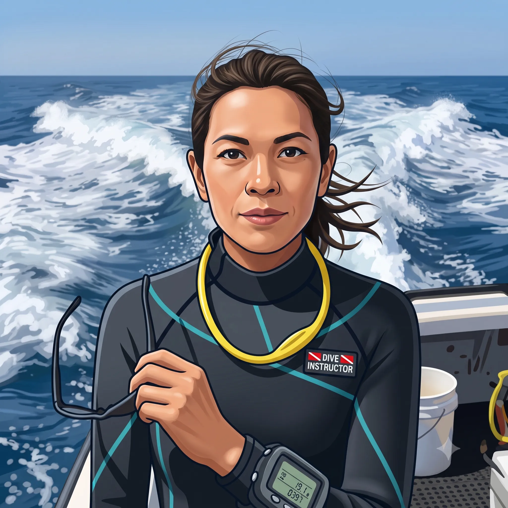

The road Orz passed by 2026 年 08 月
08 月 10 日 ( 月 )
Dive #193 ダイバーの定義について Part 2
浜松の我妻さんの threads へのポストをきっかけに思ったことに対してレスがつくなど、いろいろ流れが生まれたのと、ちょっと長くなってしまったので、スナップショットとしてここに記録しておきます。
## toru_wagatsuma
正しいダイビングガイドの使い方。
ダイバーにスキルと知識があれば、ガイドはリソースのほぼ全てを「この海の面白いところを案内する」ことに使えます。
でも、スキルが足りなければ、ガイドは「目の前で人を死なせないための安全管理」にリソースを割くしかない。
当然、面白いところを案内する余裕は激減します。
はっきり言うと、個々の安全管理は本来ガイドの仕事じゃないと思ってます。
目の前で人が亡くなるのを見たくないから、そっちにリソースを割かざるを得ないだけです。
もしあなたの安全を全てガイドに依存するなら、今の料金じゃできません。
#ダイビング #スキューバダイビング #ダイビングガイド #ダイビングのマナー
## _itoshogo
この料金で面白いとこ連れて行くから死んでも文句言うなって事ですか？
## toru_wagatsuma
最低限のことが自分でできないなら、連れていきません！ってことです。
## orzbruford
<<我妻さんと _itoshogo さんのやりとりを見ての連想 (空リプともいう)>>
連れて行かないって書くときつい印象になりますけど、現実問題としてお連れすることができないことがあるんですよ。理由は簡単で、危ないから。
たとえは串本の住崎にサクラコシオリエビを見に行きたいとします。あなたは AOW を持ってるとします。でも経験本数が 10 本もなく、中性浮力も自分自身の残圧管理も、NDL 管理もできなかったりすると、サクラコシオリエビを見に行くとなるとディープダイブになるので、自己管理ができない人は事故になる可能性が高くて、案内できなかったりします。
基準を満たせてない人は案内できないことがあります。案内するにはダイバーとしてのスキル、判断力を身につけてからどうぞということになります。
なぜかと言うと死なれては困るから。
意地悪してるわけではありません。

## chittypoma
技量がわからないお客様だったら1本目はチェックダイブにして結果次第で2本目にご案内できます、だったらどうですか。
技量不足のお客様にはこことここをクリアすればご案内できますとお伝えして努力目標にしていただければ。
## orzbruford
<<chittypoma さんへのレス>>
まさに今までやってきていることがそれですね。
問題はお聞き入れいただけない方をどうするのかという課題が、何十年も宿題として残ったままなんですよね。
## さらなるぼくの想い
今朝のやりとりで思ったのが、現場のオペレーションとしてはぼくたちの世代もやってきた。それは必要だったから。そして現役の人たちもこれからもやっていくだろうということもはっきりしている。というのはぼくらの最大の仕事は命を守るということだから。
もともとそういう仕事ではなかったけれど、守らないと危ない人たちがどんどんと増えていって、そんな人たちを守らざるを得なくなって、善意で始めたことが義務に置き換えられていった 40 年だけど、それをやめるわけにはいかない。
なぜかというとそれは仕事だからでもなく、プロだからでもなく、危ないというのが見えてしまっているから。人としてやめられない。
ただ今のぼくの頭の中では、単発のオペレーションの話だけで終わらせるのではなく、もともとダイバーとは何なのか、そしてダイビングとは何なのか、という命題に結びついてしまっている。
ぼくは OW の基準に達していない、あるいは講習直後は達していたけれどそれが失われてしまっている人はダイバーの定義から外れてしまっていると考えている (でも何もそれは彼らだけの問題、Issue ではない)。
ぼくにとってのダイバーの最低限の定義は基準に書かれてるし OW の講習でだれもが習ってきている。
<<ISO 24801-2>>
スキューバインストラクターの監督なしに、少なくとも同レベルの他のスキューバダイバーとオープンウォーターで潜水するのに十分な知識、技能、経験を有しているとみなされるよう訓練されなければならない。
<<NAUI Standard and Policy>>
このコースを無事修了した卒業⽣は、ダイビング環境、活動内容、潜⽔エリア、および器材が訓練時のものとほぼ同等である限り、監督なしでオープンウォーターダイビング活動を⾏う能⼒があるとみなされる。
これらのコース基準に書かれている「そのようにみなされる人」がダイバーだ。
これは何十年も前から変わらず、今も変わっていない。
でもやっぱりショップで仕事をしていると、僕たちが安全のためによかれと思ってやってきたことが裏目に出て、ダイバーの定義から外れてしまった人や、ひどい人になると劣悪な情報環境に振り回されて海をアミューズメントかなにかと勘違いしている人までいる。
ぼくはそんな人たちにせめて基準にある最低限の自律したスタンスと能力を身につけていただいて、基準に準じた本来のダイバーの姿に戻ってもらう、あるいはもともとそうではない人には基準に沿ったダイバーになっていただいて、より安全に、そして体験としてより広くより深くダイビングを楽しんでいただけるようにならないかと考えている。
実はぼくはあまり難しいことは求めてなくて、OW、AOW レベルのダイバーにはなって欲しい。ここではそれらの認定証を持っているという意味では一切なくて、実態として OW、AOW の基準が実装されたダイバーになっていて欲しい。それだけで安全も高まり、世界も広がるので。
そのための方法をこれからも考え続けたい。
- Category :
- #Records of Orz's Road
- #ダイビング
- #スクーバダイビング
- #ダイバー
- #ダイバーとは
- #認定基準